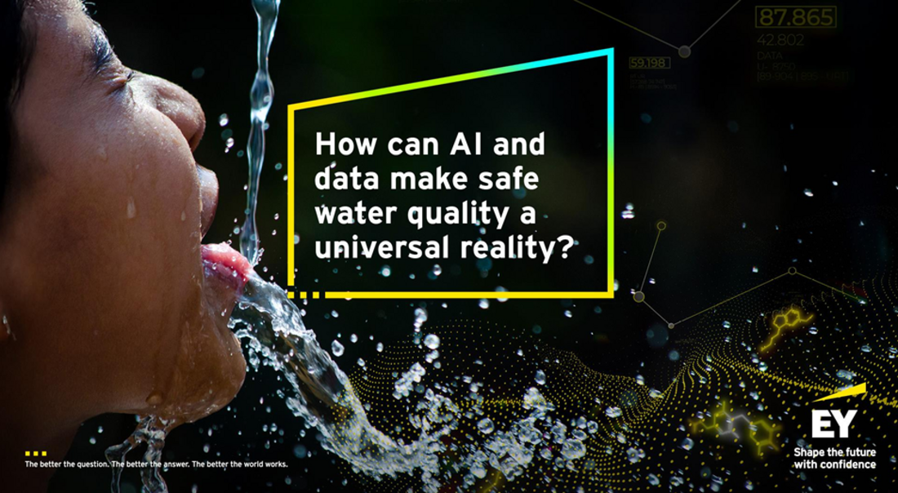
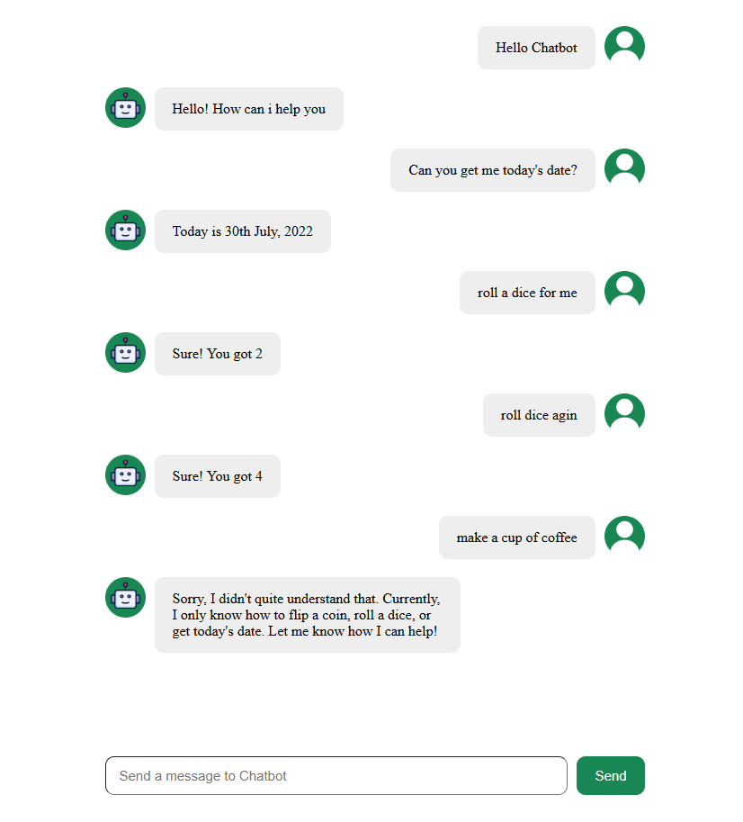

Technical / Coding Projects (Build)

Data Integration
Designed and implemented a complex CPQ solution for a Fortune 500 manufacturing company, resulting in 40% faster quote generation and improved accuracy.
Salesforce CPQ
Custom Apex
LWC
Integration APIs

2026 EY AI & Data Challenge (Ongoing)
The objective of this challenge is to develop a robust machine learning model capable of predicting water quality across various river locations in South Africa.
Artificial Intelligence
Machine Learning
Snowflake
Modeling

A Simple Chatbot
Developed a simple chatbot using ReactJS with two core features: (1) Dice Roller – Simulates rolling a 6-sided dice (2) Date Checker – Displays the current date...
React
JavaScript
Chatbot